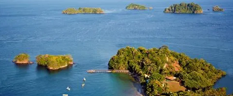
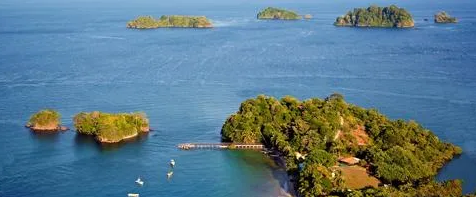

1. Nombre del país
Panamá es un país soberano de América que esta ubicado en el extremo sureste de América Central que tambien es su subdivisión. Su nombre oficial es República de Panamá.
Panamá es un país soberano de América que esta ubicado en el extremo sureste de América Central que tambien es su subdivisión. Su nombre oficial es República de Panamá.
La moneda oficial el Balboa(PAB) que vendría siendo lo mismo que el dólar americano, además de que en la actualidad no hay billetes de balboa.
El símbolo de el Balboa panameño es B/.
La capital de Panamá vendria siendo la Ciudad de Panamá. Es la zona más grande del país.
La república esta constituida por diez provincias y por seis comarcas indígenas. Limita al Norte con el mar Caribe, al Sur con el océano Pacífico, al Este con Colombia y al Oeste con Costa Rica. Su idioma oficial es el Español, pero también manejan el inglés, su religión es la Católica. Normalmente su clima es tropical y la temperatura es usualmente uniforme a lo largo del año, El promedio de la temperatura es de 27 grados C.
Cuenta con una población de 4.395.000 de personas.
Panamá no cambia entre hora de verano y hora de invierno. El identificador de la zona de IANA para Panamá es America/Panamá.
 


| Nombre | Población | Superficie en Km2 | Descripción | Atracciones Turísticas |
| Bocas del Toro | 170.320 habitantes | 4.657.2 Km2 | Una provincia rica en historia, cultura y naturaleza | Chiriquí | 476.755 habitantes | 6.547.7 Km2 | La provincia cuenta con gran variedad de paisajes naturales y cuenta con una rica herencia indígena y colonial |
| Los Santos | 89.592 habitantes | 3.809.4 Km2 | Es conocida por su gastronomia local, también se pueden disfrutar de fetividades y eventos culturales | |